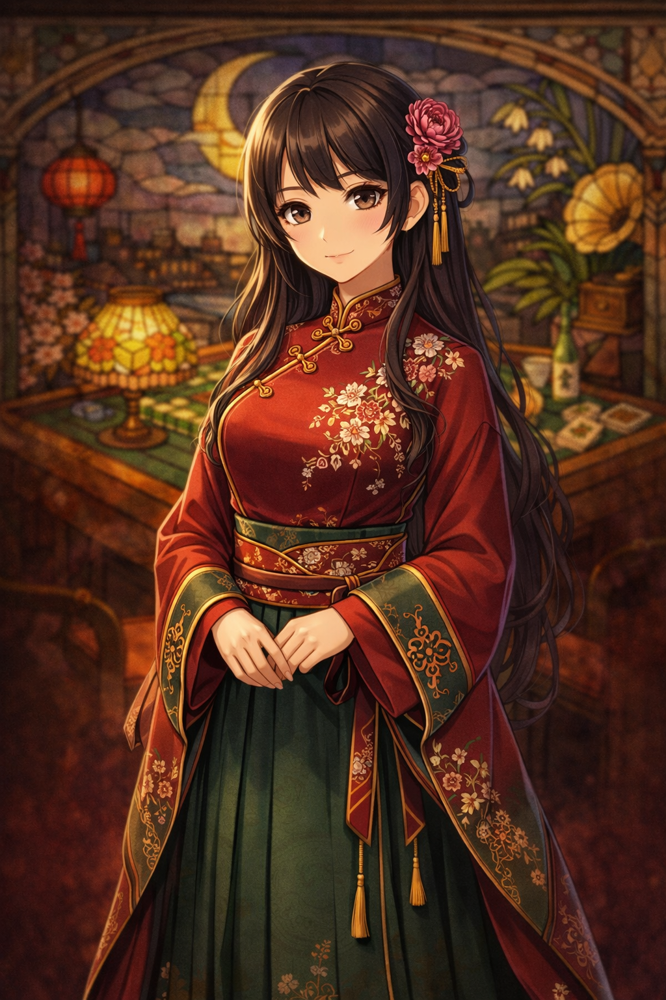

Story
倦まず心和むる時間を
❖
和と洋、静けさと灯りのあいだ
静刻堂は、ただ勝敗を競うための卓ではなく、 誰かと同じ時間を囲み、気持ちをほどいていくための場所。 深い紅と金の装飾、磨かれた木の卓、夜を映すステンドグラス。 大正ロマンの華やぎに、少しだけ逃げ場のような静けさを重ねました。
Guide
袴とチャイナをまとう案内人
❖

月城 紅羽（つきしろ くれは）
袴の気品とチャイナ服の華やぎをあわせ持つ、静刻堂の看板娘。 はじめて卓を囲む人にもやさしく、静かな声で店の空気を整えてくれます。 このページでは、店そのものの物語性を深める象徴として配置しています。
Access
月の見える路地裏にて
❖
営業
十五時より二十三時まで。夕暮れから夜更けにかけて、もっとも美しく灯ります。
席
二人卓、四人卓、喫茶のみの窓辺席をご用意。眺めるだけのご来店も歓迎です。
しつらえ
ステンドグラス、真鍮の装飾、深紅の壁紙、磨いた木の卓でお迎えいたします。
※ 架空の店舗サイトとして制作したデザインです。